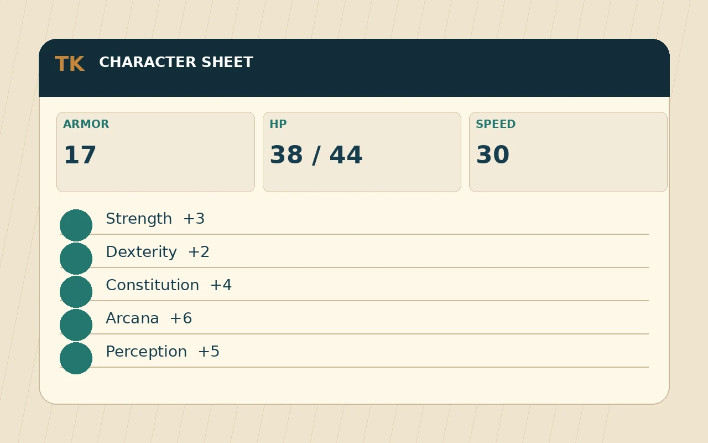
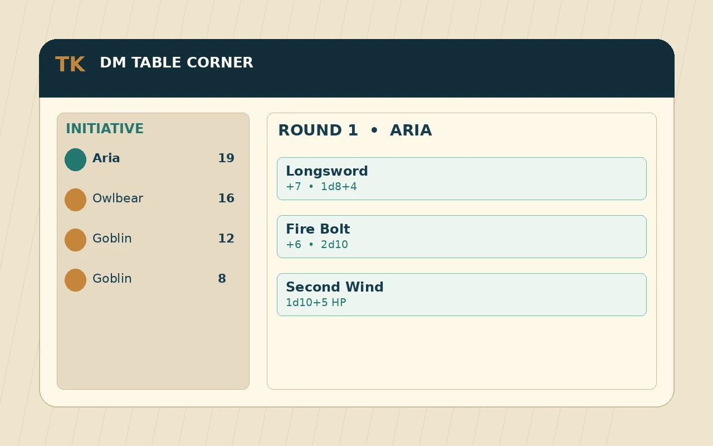
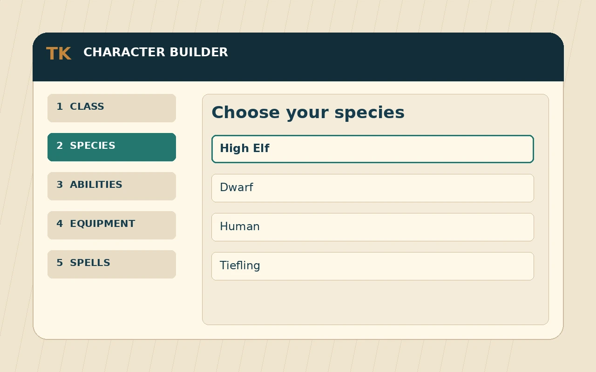
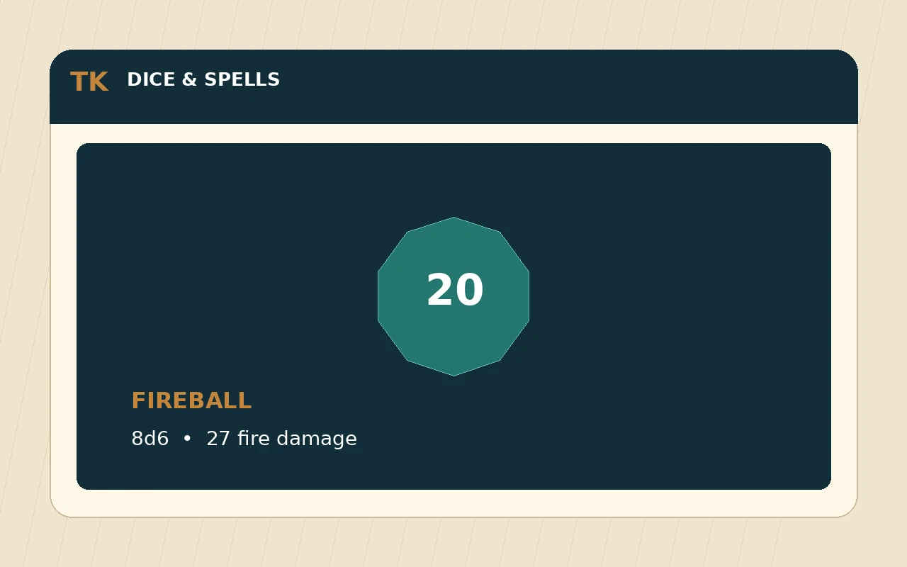

Table Keeper · Free · No ads · No account needed
Free D&D 5e character builder and character sheet
Build a Dungeons & Dragons 5th edition character one step at a time, with the expansion books included, then play every session from a character sheet that spends spell slots, tracks hit points and rolls your dice.
Characters save in your browser as you go. Have an account? .

Run the game from the DM Table Corner
A screen for the Dungeon Master. Add monsters from the bestiary and every attack comes ready to roll, to hit and damage, with crits and saving throws handled. Track initiative, hit points and conditions round by round, move tokens on your own map, and keep your session notes.
Build encounters ahead of time and load them into the fight in a click, make homebrew creatures mid-game, and work out overland travel time and encounter difficulty. Nothing to sign up for: it saves on your device.
- Initiative
- Monsters
- Saved encounters
- Homebrew
- Map
- Notes
- Travel
- Rules reference

Build a character step by step
The builder walks you through each choice in order and only offers options that are legal for the build so far. It works out Armor Class, hit points, saving throws, skills, attack bonuses and spell save DC for you.
- Class
- Race
- Subclass
- Ability scores
- Background
- Skills
- Feats
- Equipment
- Spells
- Details

Play the session from your sheet
Cast a spell and the sheet spends the slot, scales it when you upcast and rolls the damage with 3D dice, next to the save DC your targets need to beat. Click any check, save, skill or attack to roll it.
Take damage or heal in one tap, and track temporary hit points, hit dice, short and long rests, death saves, conditions, exhaustion and concentration. Leveling up adds the new features, hit points and spell slots.

Expansions and homebrew
The expansions are already here
Want a Tasha’s subclass or a race from Monsters of the Multiverse? It’s right there next to the Player’s Handbook options. You don’t have to buy or unlock anything. Here’s every book we support.
Setting books too
If your group plays in Eberron, Ravnica, Strixhaven or somewhere out in Spelljammer, the races, backgrounds and subclasses from those books show up in the builder as well.
Make your own
Did your DM invent a race, or have you been tinkering with a spell? Add it in the homebrew editor and it works just like official content, in the builder and on your sheet. You can even build whole classes and subclasses, with as many levels as you like.
Table Keeper tools
Prepare characters and run sessions from one place.
Your next character starts here
Pick a class and you’ll be rolling dice in minutes.
Keep characters, campaigns, and table tools together.